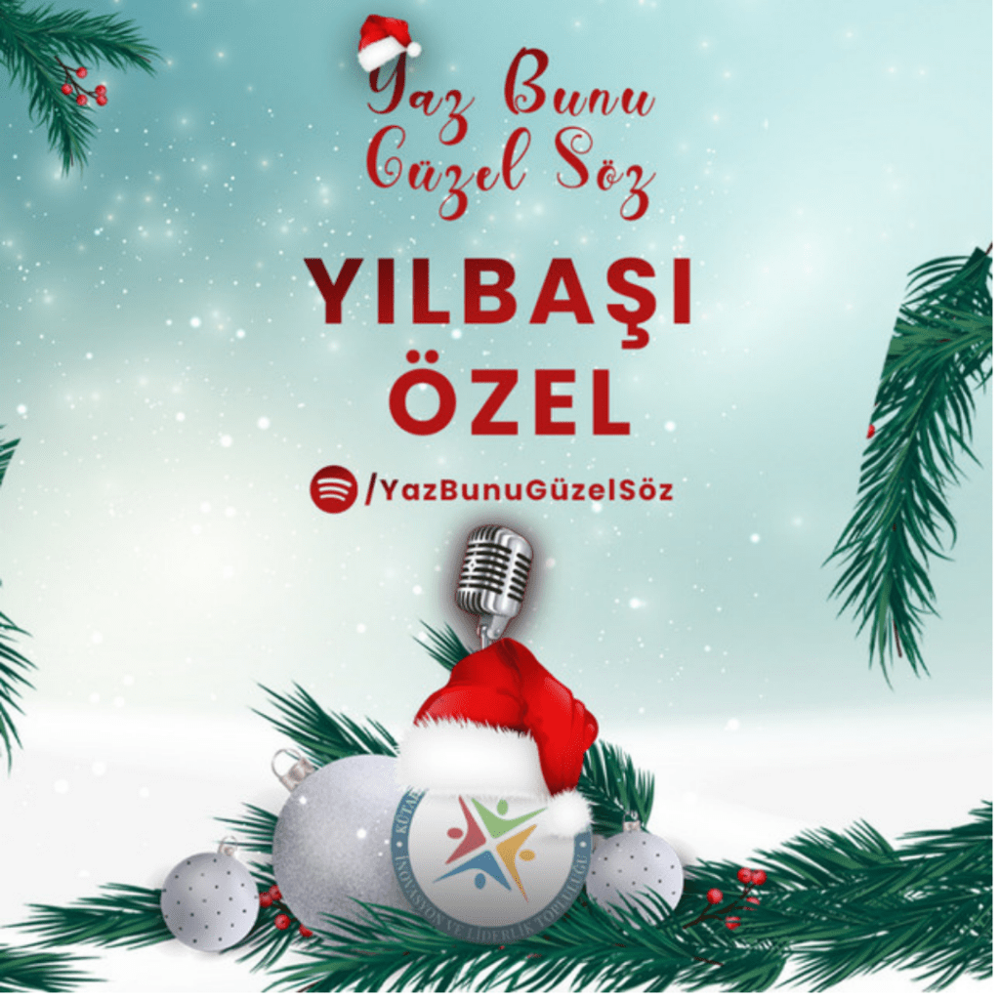
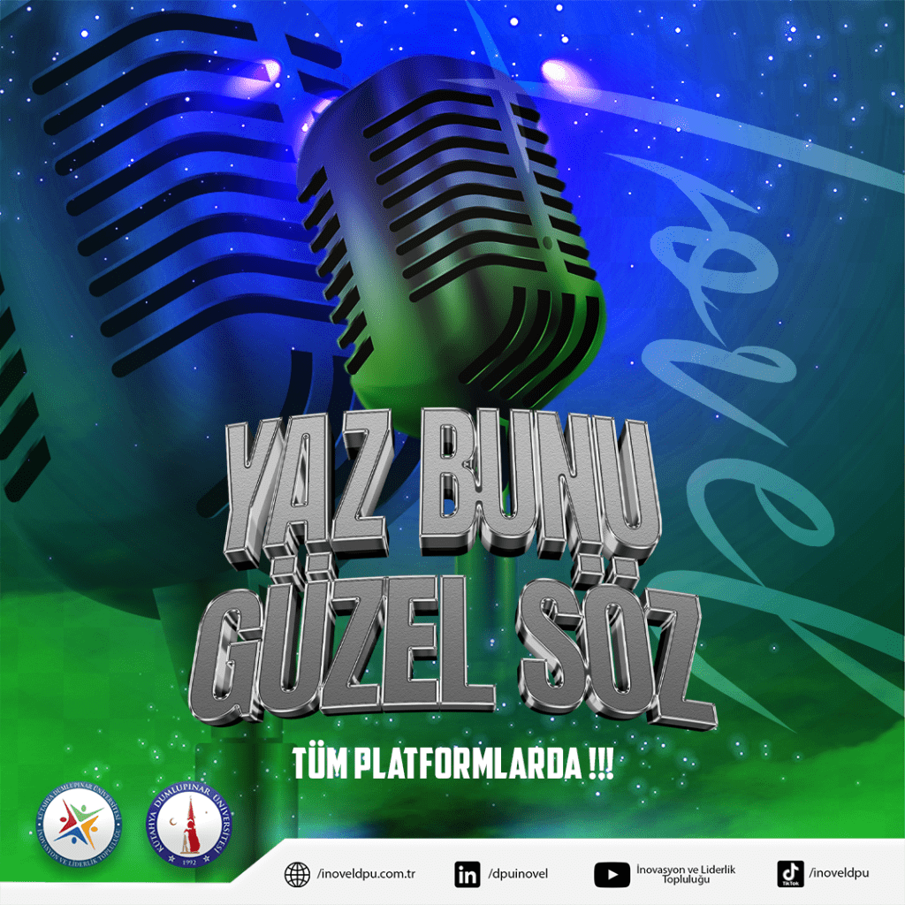
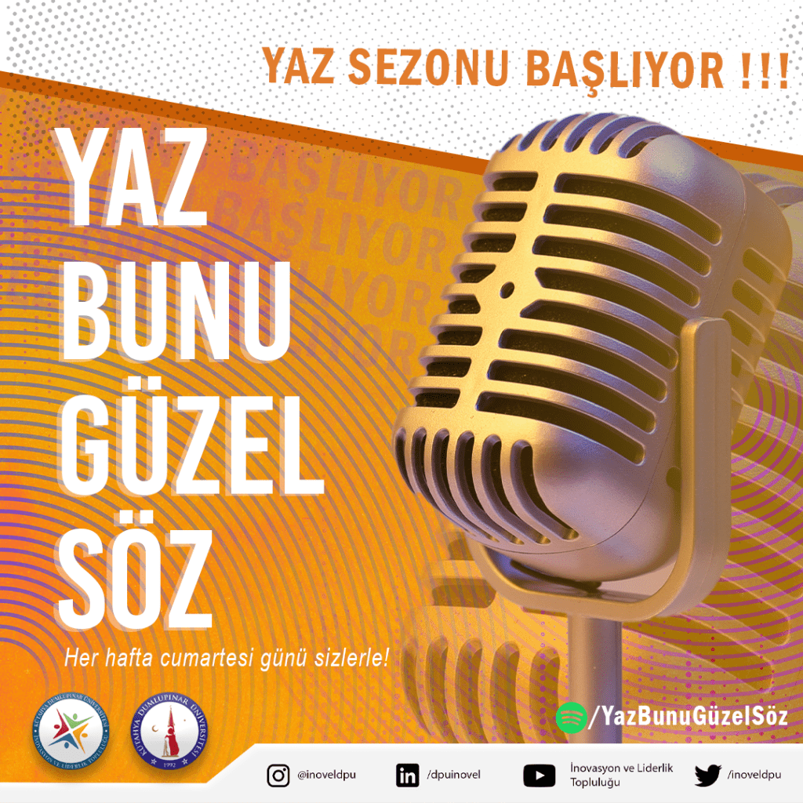

Podcast
2024 Yılbaşı Özel
Yaz Bunu Güzel Söz · Spotify
İNOVEL YAYINDA / OKU. DİNLE. KEŞFET.
Yaz Bunu Güzel Söz. Yolda, molada veya kampüste; İnovel podcast arşivini keşfet, Spotify’da dinle.
İÇERİKLERE GÖZ AT
3 içerik
Yaz Bunu Güzel Söz · Spotify

PodcastYaz Bunu Güzel Söz · Spotify

PodcastYaz Bunu Güzel Söz · Spotify
Aramanı değiştirebilir veya filtreleri temizleyebilirsin.
TOPLULUK ÇALIŞMALARI